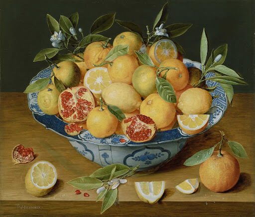

Jacob van Hulsdonck, Still Life with Lemons, Oranges, and a Pomegranate, 1620-1640
Maria Margaretha van Os, Still Life with Lemon and Cut Glass, 1823-26
Paul Cezanne, Still Life in Blue with Lemon, 1873-77
Vincent van Gogh, Still Life with Lemons on a Plate, 1887
Vincent van Gogh, Carafe and Dish with Citrus Fruit, 1887

Vincent van Gogh, Still Life of Oranges and Lemons with Blue Gloves, 1889
Paul Cezanne, Lemon, 1890
Rafael Romero Barros, Naranja abierta y azahar, 1895
Alex Katz, Still Life with Lemons, 1955
Iain Baxter, Bagged Day-Glo Oranges, 1967-8
Ian Hamilton Finlay, Marine, 1968
Roy Lichtenstein, Still Life with Peeled Lemon, 1972
Roy Lichtenstein, Untitled (Still Life with Lemon and Glass), 1974
Fernando Botero, Orange, 1977
Donald Sultan, Black Lemon, 1984
Donald Sultan, Five Lemons, a Pear, and an Egg, 1994
David Hockney, Peeled Lemon with Slices, 1995
Donald Sultan, Orange Feb 27 1996, 1996
Laura Owens, Untitled, 2014
Laura Owens, Untitled, 2014
Susan Jane Walp, Pommelo with Spoon, 2014
Susan Jane Walp, Blood Orange in Green Dish with Blue Cloth, 2017
Juan de Zurbarán, Still Life with Lemons in a Wicker Basket, 1643-9